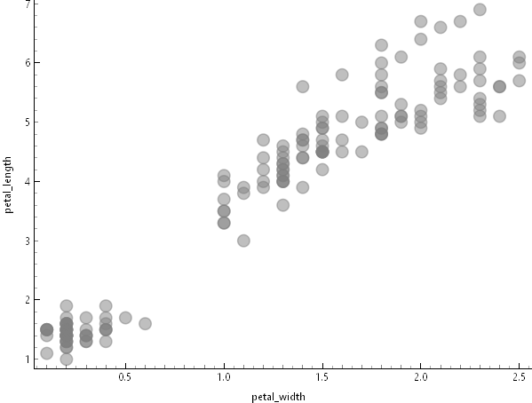
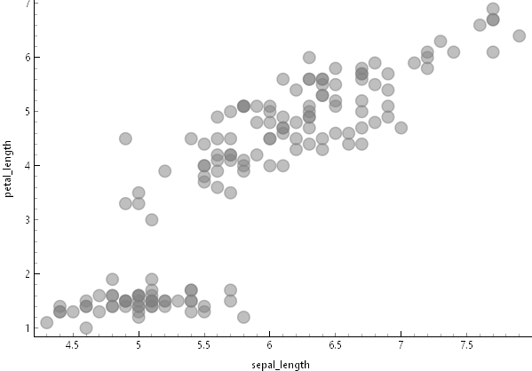
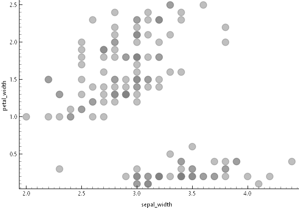

Chapters 2 - Memahami Data#
Korelasi antara sepal_width dan sepal_length#

penjelasan#
Dari gambar di atas menunjukkan korelasi antara sepal_widh dan sepal_length sangat lemah atau tidak ada korelasi, dikarenakan Titik-titik data tersebar tanpa membentuk pola yang jelas, menunjukkan bahwa tidak ada hubungan yang kuat antara sepal length dan sepal width. artinya Kedua variabel ini dapat dianggap sebagai fitur yang berdiri sendiri dan tidak saling mempengaruhi secara linear.
Korelasi antara petal_width dan petal_length#

penjelasan#
dari gambar di atas menunjukkan korelasi antara petal_width dan petal_length sangat kuat, dikarenakan Titik-titik data membentuk pola yang jelas dari kiri bawah ke kanan atas, menunjukkan bahwa semakin besar nilai petal_length, semakin besar pula nilai petal_width. artinya kedua variabel sangat rapat membentuk pola linear yang jelas. namun terdapat Dua cluster yang terpisah kemungkinan besar merepresentasikan iris yang berbeda, tetapi tidak menyebabkan ambigu.
Korelasi antara sepal_length dan petal_length#

penjelasan#
Dari gambar di atas menunjukkan korelasi antara sepal_length dan petal_length sangat kuat, dikarenakan titik-titik data membentuk pola yang jelas dari kiri bawah ke kanan atas, menunjukkan bahwa semakin besar nilai sepal_length, semakin besar pula nilai petal_length. Artinya kedua variabel sangat rapat membentuk pola linear yang jelas. Namun terdapat dua cluster yang terpisah kemungkinan besar merepresentasikan iris yang berbeda, tetapi tidak menyebabkan ambigu.
Korelasi antara sepal_length dan petal_width#

Penjelasan#
Dari gambar di atas menunjukkan korelasi antara sepal_length dan petal_width sangat kuat, dikarenakan titik-titik data membentuk pola yang jelas dari kiri bawah ke kanan atas, menunjukkan bahwa semakin besar nilai sepal_length, semakin besar pula nilai petal_width. Artinya kedua variabel sangat rapat membentuk pola linear yang jelas. Namun terdapat dua cluster yang terpisah kemungkinan besar merepresentasikan iris yang berbeda, tetapi tidak menyebabkan ambigu
Korelasi antara sepal_width dan petal_length#

penjelasan#
Dari gambar di atas menunjukkan korelasi antara sepal_width dan petal_length cenderung lemah, dikarenakan titik-titik data tidak membentuk pola linear yang konsisten dari kiri bawah ke kanan atas. Terlihat adanya dua cluster yang sangat terpisah secara vertikal, di mana cluster bawah memiliki petal_length rendah dan cluster atas memiliki petal_length tinggi, namun dalam masing-masing cluster tidak ada hubungan yang jelas dengan sepal_width. Artinya kedua variabel tidak menunjukkan pola yang rapat dan penyebaran data relatif acak. Dua cluster yang terpisah ini kemungkinan besar merepresentasikan spesies iris yang berbeda dengan karakteristik yang sangat berbeda, dan pemisahan yang sangat jelas ini tidak menyebabkan ambigu
Korelasi antara sepal_width dan petal_width#

Penjelasan#
Dari gambar di atas menunjukkan korelasi antara sepal_width dan petal_width lemah atau tidak konsisten, dikarenakan titik-titik data tidak membentuk pola linear yang jelas dari kiri bawah ke kanan atas. Terlihat adanya dua cluster yang sangat terpisah secara vertikal, di mana cluster bawah memiliki petal_width sangat rendah dan cluster atas memiliki petal_width lebih tinggi, namun dalam masing-masing cluster penyebaran data relatif acak tanpa menunjukkan hubungan yang kuat dengan sepal_width. Artinya kedua variabel tidak membentuk pola linear yang rapat dan peningkatan sepal_width tidak diikuti oleh peningkatan petal_width secara konsisten. Dua cluster yang terpisah ini kemungkinan besar merepresentasikan spesies iris yang berbeda, dan pemisahan yang sangat jelas ini tidak menyebabkan ambigu.
Statistik dikriptif#

penjelasan#
Berdasarkan tabel statistik deskriptif di atas, dataset Iris menunjukkan karakteristik yang menarik untuk setiap variabel pengukuran. Pada sepal_length, nilai rata-rata sebesar 5.84 cm sangat dekat dengan median 5.8 cm, mengindikasikan distribusi data yang relatif simetris dan terkonsentrasi di kisaran 5-6 cm dengan variasi yang kecil. Sementara itu, sepal_width memiliki mean 3.05 cm dengan median dan mode sama-sama bernilai 3 cm, menunjukkan bahwa lebar sepal cenderung homogen antar spesies dengan penyebaran data yang rapat. Berbeda dengan pengukuran sepal, variabel petal_length dan petal_width menunjukkan pola yang lebih kompleks. Nilai mode pada petal_length (1.5 cm) dan petal_width (0.2 cm) sangat berbeda dengan median masing-masing (4.35 cm dan 1.3 cm), yang mengindikasikan adanya distribusi bimodal atau dua kelompok data yang terpisah jelas. Hal ini diperkuat oleh nilai dispersi yang lebih tinggi pada petal_width (0.63) dibandingkan variabel lainnya, menunjukkan bahwa pengukuran petal memiliki variabilitas yang lebih besar dan lebih efektif untuk membedakan antar spesies
Google Collab#
Link#
https://colab.research.google.com/drive/1NAN3PQ3Xz_5hnnYu9vBmqvBksbWDerp4?usp=sharing
kode#
---
import pandas as pd
from scipy import stats
# 1. Membaca file
df = pd.read_csv("/content/IRIS.csv")
# 2. Menampilkan daftar kolom untuk memastikan nama kolom benar
print("Daftar Kolom:", df.columns.tolist())
print("-" * 30)
# 3. Menghitung statistik (Pastikan 'NilaiPreTest' benar-benar ada di hasil print kolom di atas)
# I'll use 'sepal_length' as an example, but you should choose the correct column.
print("Jumlah data :", df['sepal_length'].count())
print("Rata-rata :", df['sepal_length'].mean())
print("Nilai minimal :", df['sepal_length'].min())
print("Q1 :", df['sepal_length'].quantile(0.25))
print("Q2 (Median) :", df['sepal_length'].quantile(0.5))
print("Q3 :", df['sepal_length'].quantile(0.75))
print("Nilai Max :", df['sepal_length'].max())
print("Kemencengan 1 :", "{0:.2f}".format(round(df['sepal_length'].skew(), 2)))
print("Kemencengan 2 :", "{0:.6f}".format(round(df['sepal_length'].skew(), 6)))
print("Standar Deviasi :", "{0:.2f}".format(round(df['sepal_length'].std(), 2)))
print("Variansi :", "{0:.2f}".format(round(df['sepal_length'].var(), 2)))
# 4. Memperbaiki perhitungan modus agar spesifik ke kolom 'sepal_length' saja
mode = stats.mode(df['sepal_length'], keepdims=True)
print("Nilai modus {} dengan jumlah {}".format(mode.mode[0], mode.count[0]))
---
### Output
```sql
---
Daftar Kolom: ['sepal_length', 'sepal_width', 'petal_length', 'petal_width', 'species']
------------------------------
Jumlah data : 150
Rata-rata : 5.843333333333334
Nilai minimal : 4.3
Q1 : 5.1
Q2 (Median) : 5.8
Q3 : 6.4
Nilai Max : 7.9
Kemencengan 1 : 0.31
Kemencengan 2 : 0.314911
Standar Deviasi : 0.83
Variansi : 0.69
Nilai modus 5.0 dengan jumlah 10
---
### penjelasan
Kode tersebut bertujuan untuk melakukan **analisis statistik deskriptif** pada dataset **Iris dataset**, khususnya pada kolom `sepal_length`. Program membaca file CSV, memastikan nama kolom benar, lalu menghitung berbagai ukuran statistik seperti jumlah data, rata-rata, nilai minimum dan maksimum, kuartil (Q1, median, Q3), standar deviasi, variansi, kemencengan (skewness), serta modus. Tujuannya adalah untuk memahami karakteristik, penyebaran, dan bentuk distribusi data sebelum dilakukan analisis lanjutan.